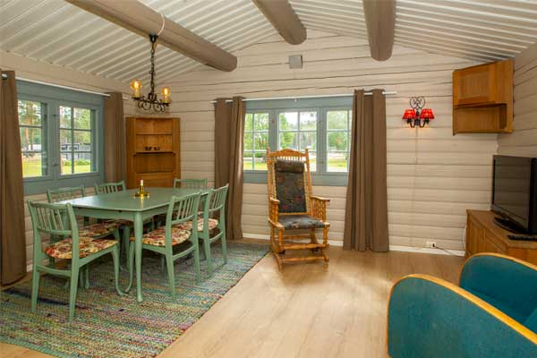
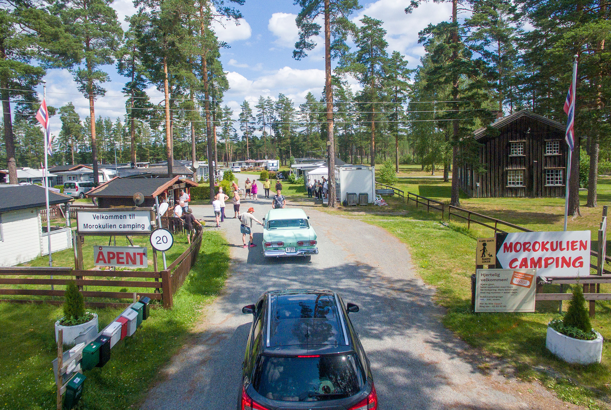
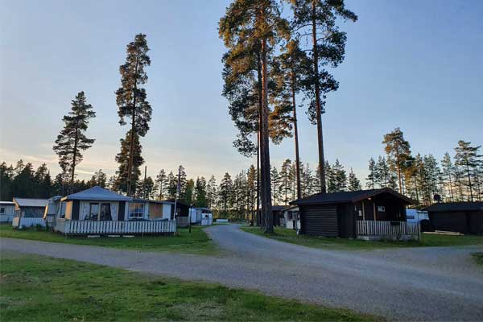
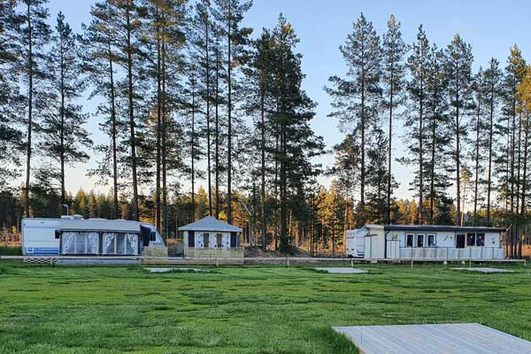
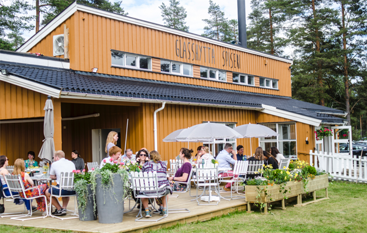
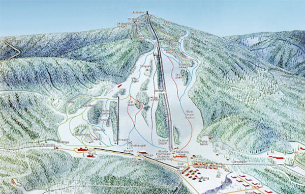
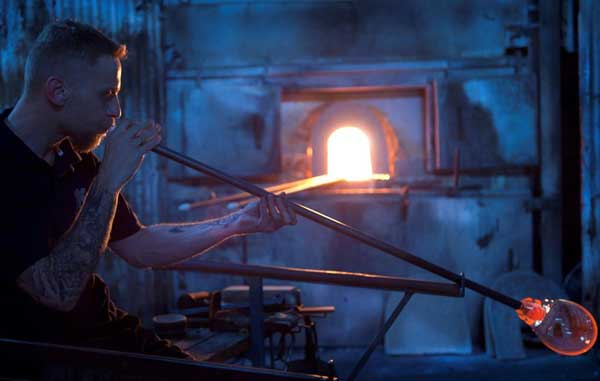
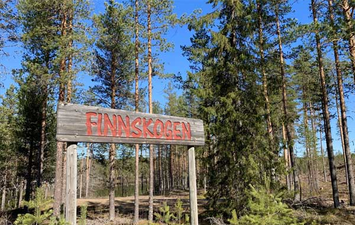
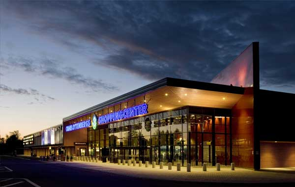
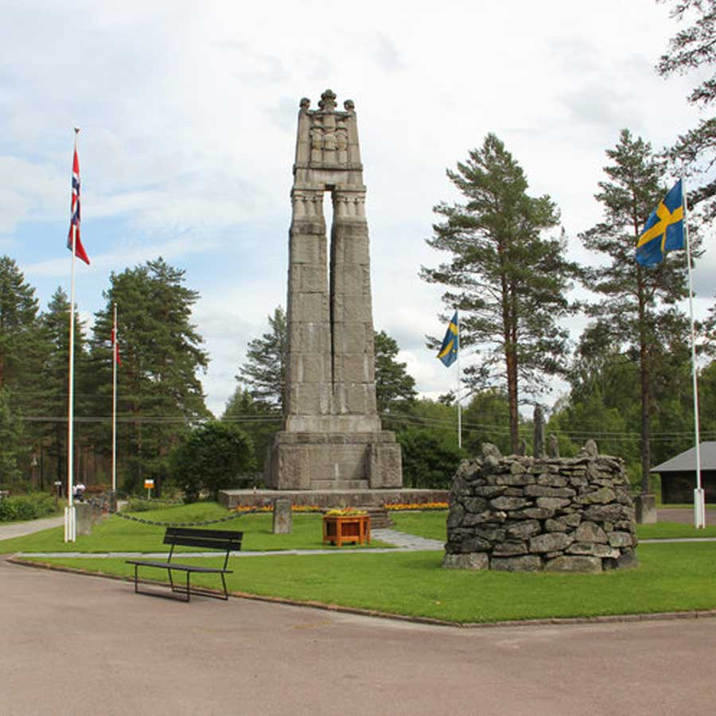

Hytter
Vi har hytter til både 4 og 6 personer. Enkel standard, men hyggelig pris.
Fra kr 650

Campingplassen på Fredsplassen Morokulien, på grensen mellom Norge og Sverige.
Se overnattingDette er en fredelig og jovial plass med stor takhøyde og hyggelig stemning. Her trives liten og stor.
Vi leier ut campinghytter i sjarmerende enkel stil, har plasser til bobil og campingvogn med og uten platting, faste sommer- og vinterplasser og ellers fine muligheter for telt og hengekøyer i furutrærne.

Vi har hytter til både 4 og 6 personer. Enkel standard, men hyggelig pris.
Fra kr 650

Fine oppmerkede plasser med strøm for døgnleie.
Fra kr 290

Din egen sommer- og vinterplass på Morokulien Camping.
Ring for bestilling eller mer informasjon på telefon
eller send oss en e-post på morokuliencamping@gmail.com

Campingen ligger vegg i vegg med Glasshytta Spiseri – et urbant sted i skogen. Her serveres det tradisjonell kost og annen digg mat med gode råvarer i koselige omgivelser.

Kort vei fra Morokulien Camping ligger Valfjället, som tilbyr et av Sør-Sveriges høyeste fallhøyder, stor variasjon med et tilbud for hele familien. Her er det 5 heiser og 12 nedfarter. Valfjället har også en funpark med airbag og rails og en skicrossbane som passer skikjørere i alle aldre.
Perfekt vinteraktivitet for hele familien.
Aktivitetskalender for Kongsvingerregionen. Her får du en oversikt over det meste som skjer i vår region.

Eidskog har en lang glasshåndverkstradisjon, og Magnor Glassverk er virkelig verdt et besøk. Her kan du kuppe flotte glassprodukter og se på glassblåsing live.
Ingelsrud Konditori, et ekte håndverksbakeri, må besøkes når du er på Magnor. Eller verdt en tur alene.

«Vi vandrer med freidig mot». Finnskogleden er en vandringsled som strekker seg fra Morokulien til Trysil. Ledens første etappe starter ved Morokulien. Hos oss kan du få en deilig natts søvn før du tar fatt på den herlige vandringen i deilig terreng.

Når grensen mot Sverige åpner ligger vi kun 10 minutter unna shoppingsenteret i Charlottenberg. Et yndet sted for shopping av klær, møbler og matvarer.

Hvert år blir det arrangert store klubber og stevner på Morokulien, alt fra hundeutstillinger til biltreffer. Her er alle muligheter, med egnet plass både på norsk og svensk side av grensen.
Vi har god erfaring og kunnskap med å tilrettelegge arrangement, og i tett samarbeid med Montebello Camping og Glasshytta Spiseri kan vi tilby overnatting med ulike fasiliteter og selskapsmiddager med kvalitetsmat.
Kontakt oss på telefon +47 628 35 280